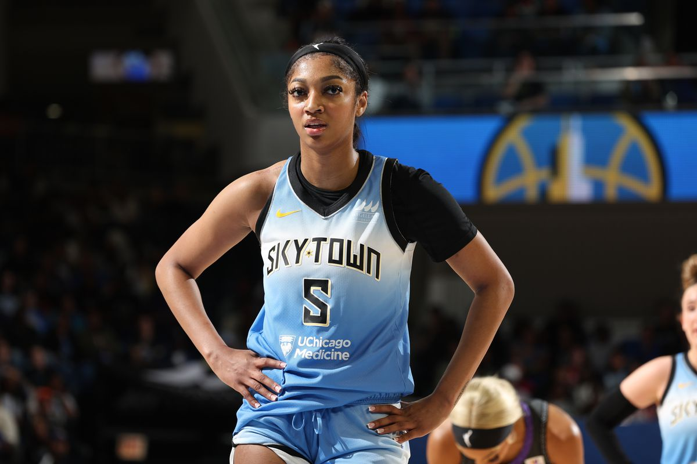
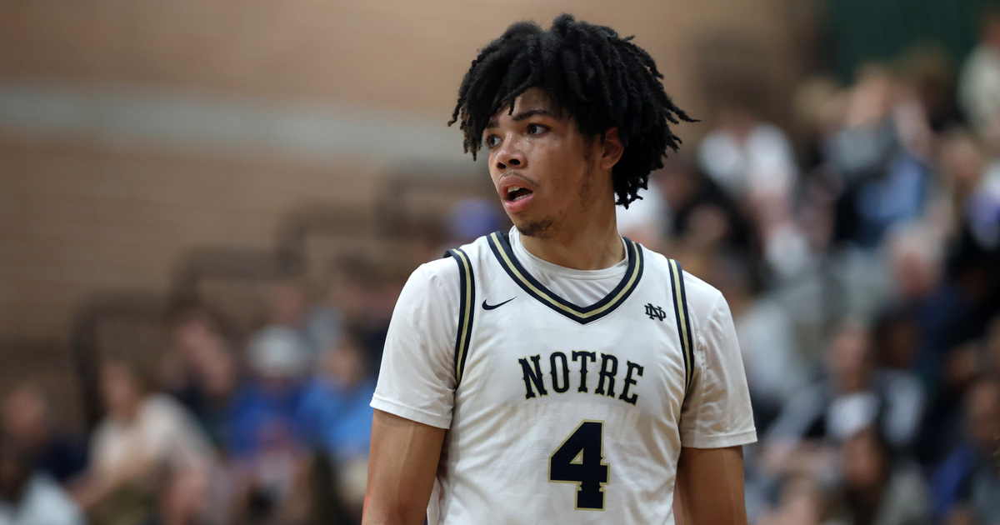
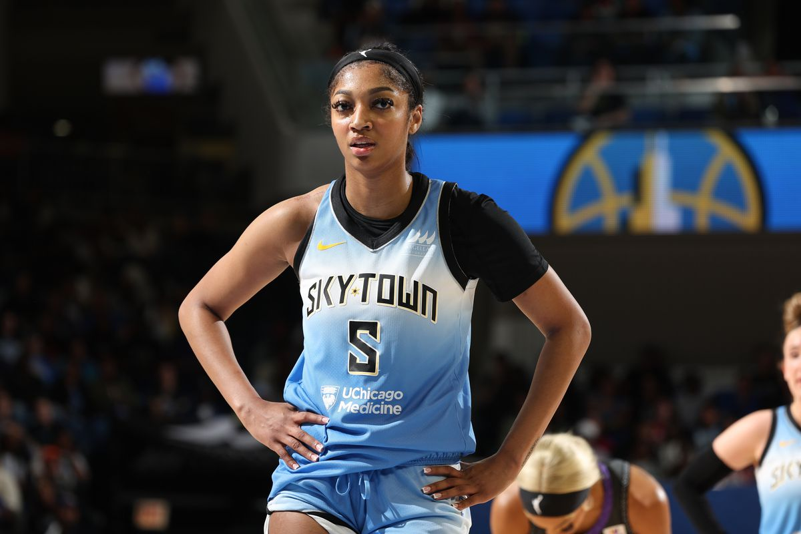
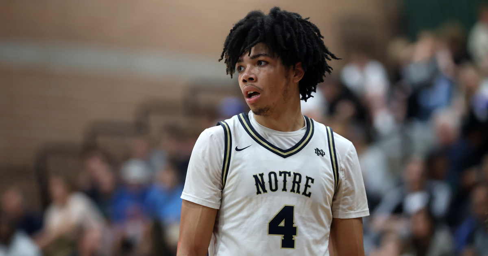

Trusted by the Best
 




More Than Just Results
What I hear most from the players and parents I work with isn’t just about improvement. It’s about the way I coach and the connection we build. Athletes tell me they feel heard, pushed, and supported. They say I bring the best out of them by keeping it honest and real. Parents mention how I keep their kids focused, accountable, and growing, not just as athletes but as people. Whether we’re on the court or just talking after a session, I take the time to understand who they are. That trust is what makes the work matter.
Stats
Since starting my coaching program, most of the athletes I’ve worked with have seen real progress in just a couple of months. Whether it’s jumping higher, moving quicker off the first step, or making smarter reads on the court, the improvements show up fast. A lot of guys I’ve trained have gone on to get college looks or become key players on their high school teams. If you’re serious about taking your game to the next level, it comes down to consistent work and real discipline. That’s what gets results.